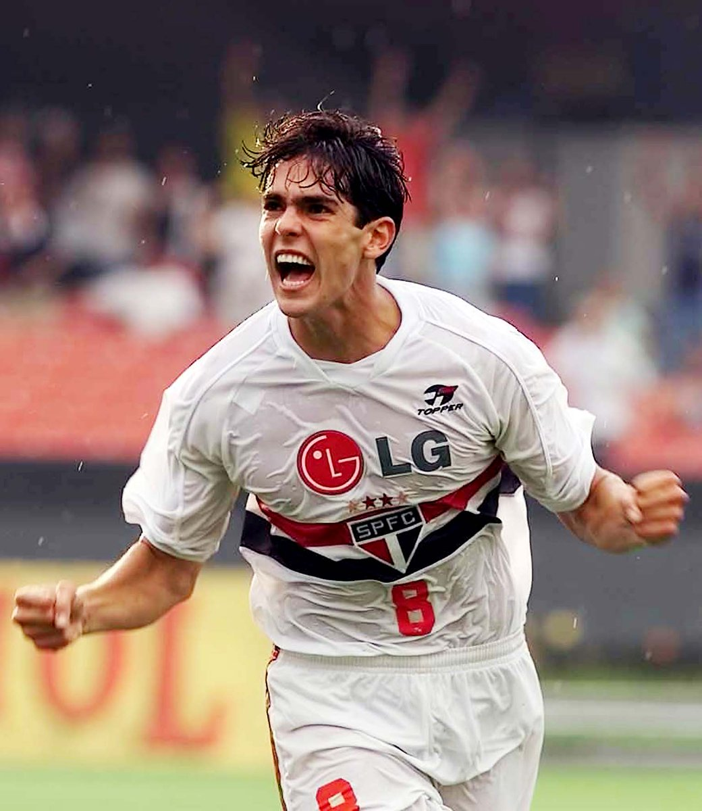

<html>
    <head>
        <title>São Paulo Futebol Clube</title>
        <link rel="stylesheet" href="style.css">
    </head>
</html>

<body>
    <ul class="menu">
        <li class="links"><a href="welcome">INÍCIO</a></li>
        <li class="links"><a href="historia">HISTÓRIA</a></li>
        <li class="links"><a href="videos">VÍDEOS</a></li>
        <li class="links"><a href="jogadores">JOGADORES</a></li>

    </ul>
<br><br>
    <section id="welcome" class="paralax-cotainer">
        <div class="parallax-inner">
            
            <h1>São Paulo Futebol Clube</h1>
            <h2>Fundado em 1930</h2>
        </div>
    </section>


     <section id="historia">
        <h1>História do São Paulo Futebol Clube</h1>
        <div class="line"></div>
        <p>No dia 25 de janeiro de 1930 foi assinada a ata de fundação do São Paulo Futebol Clube, nascido da união entre a Associação Atlética das Palmeiras e uma grande parte dos jogadores e alguns membros da diretoria do Club Athletico Paulistano (que resolveu fechar o departamento de futebol em 1929), ficando como data magna do clube o dia 25 de janeiro de 1930, dia e mês em que foi fundada a cidade de São Paulo.[20] Conservando as tradições do passado, o uniforme da nova equipe estamparia as faixas vermelhas e pretas em homenagem aos dois times fundadores.[21

        </p>
     </section>

     <section id="videos">
        <h1>Vídeos</h1>
        <div class="line"></div>
        <br>
        <iframe width="1237" height="696" src="https://www.youtube.com/embed/K2N01bFmXHU" title="São Paulo 1 x 0 Liverpool ● Final Mundial de Clubes 2005 Gols e Melhores Momentos HD" frameborder="0" allow="accelerometer; autoplay; clipboard-write; encrypted-media; gyroscope; picture-in-picture; web-share" allowfullscreen></iframe>
        <br>
        <br>
        <iframe width="1237" height="696" src="https://www.youtube.com/embed/vzULKWjCV9E" title="São Paulo 2 x 1 Barcelona ● Mundial Interclubes 1992 Gols e Melhores Momentos HD" frameborder="0" allow="accelerometer; autoplay; clipboard-write; encrypted-media; gyroscope; picture-in-picture; web-share" allowfullscreen></iframe>
     </section>

     <section id="jogadores">
        <h1>Jogadores</h1>
         
         <div class="line"></div>
         <a href="https://pt.wikipedia.org/wiki/Rog%C3%A9rio_Ceni" target="_blank">Rogério Ceni</a>
         <br><br>
         
         <div class="line"></div>
         <a href="https://pt.wikipedia.org/wiki/Kak%C3%A1" target="_blank">Kaká</a>
     </section>
</body>